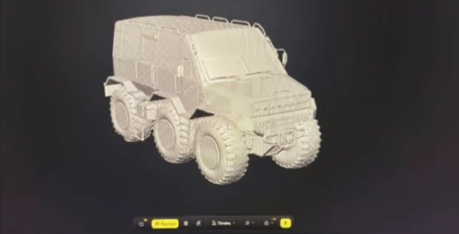
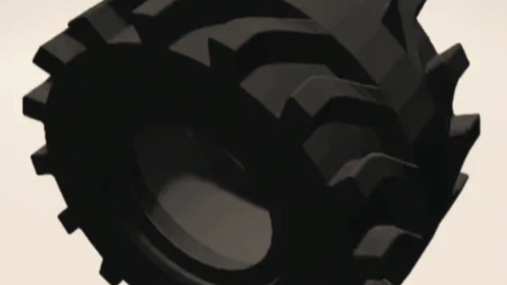

Чечерин Михаил Андреевич
Чкалин Матвей Евгеньевич
Ленц Савелий Янович
Евсеев Федор Михайлович
Наставник: Волков Сергей Михайлович
г. Нижний Новгород
Концепт-проект Кванториум Нижний Новгород
Цель: Разработать концепт автобуса предназначенного для арктической и антарктической местности, готовый к презентации на конкурсе проектных задач ГАЗ.
Задачи: Исследование рынка, выбор оптимальной концепции, документация, презентация.
Наш проект посвящен созданию специализированного транспортного средства высокой проходимости — вездехода, предназначенного для эксплуатации в экстремальных условиях Арктики и Антарктики. Главная концепция заключается в разработке машины, которая сочетает в себе высокую грузоподъемность, абсолютную надежность и минимальное воздействие на хрупкую экосистему полярных регионов.
Двигатель: КамАЗ 740.37-400 — дизельный V8 с турбонаддувом, мощность 400 л.с.,
крутящий момент 1766 Н·м.
Мосты: Портальные мосты типа «Звезда», 4 штуки. Портальность 114 мм — ось колеса
опущена, поднимает раму выше. Диаметр ведомого вала редуктора 50 мм.
Шины и колёса: Шины 1780x710-32, наружный диаметр 1780 мм, тип: сверхнизкого
давления, «гибкая оболочка».
| Модель | Двигатель | Колёсная формула | Грузоподъёмность | Цена | Особенности |
|---|---|---|---|---|---|
| КАМАЗ «Арктика» | 240–300 л.с. | 6х6 | до 3000 кг | от 25 млн руб. | минусы: высокая стоимость, меньшая мощность |
| Вездеход «Шаман» | 160–200 л.с. | 8х8 | до 4000 кг | 25–33 млн руб. | недостаточная мощность для тяжёлых условий Арктики |
| Наш проект «Автобус для Арктики» | 400 л.с. | 8х8 | до 3000 кг | 16,5 млн ₽ | портальность + шины 1780 мм, давление <0.3, отечественные компоненты |
✅ Наш вездеход выигрывает по мощности, цене и экологичности — полностью отечественные компоненты.
Доставка учёных и оборудования, базирование полевых лагерей, геологические и гляциологические исследования.
Эвакуация людей из зон бедствий, доставка спасателей и гуманитарных грузов, работа там, где не пройдёт другая техника.
Вахтовые перевозки на месторождения, геологоразведка, работа в период распутицы и зимников.
Северный завоз, доставка грузов в отдалённые посёлки, обеспечение топливом и продовольствием, экономичная замена авиации.

🎨 Кастомизация: нанесение логотипов заказчика, экспедиционная маркировка, дополнительный багажный отсек.

Вариации протектора: арктический (лёд/снег), антарктический (глетчерный лёд + камни), болотоходный.
Вездеход, который сможет работать там, где обычная техника встанет.
Для постройки первого опытного образца необходимо 19 миллионов рублей. При поддержке ГАЗ сборка на настоящем производстве.
Целевая цена серийной машины: 16,5 млн ₽
Результатом нашей работы стал концепт автобуса для арктического и антарктического региона, который отвечает техническим требованиям и соответствует тенденциям современного дизайна. Если наш концепт будет пущен в производство, это станет прорывом в развитии транспорта в регионе.
«Наша главная мечта: увидеть, как машина с логотипом ГАЗ, придуманная нами в школьном кружке, едет по льдам Антарктиды. Это реально, и мы знаем, как это сделать.»
— Команда «Квантовый скачок»
Наш проект — это не просто школьные чертежи. Это реальный шанс сделать российскую технику для Арктики доступной, надёжной и своей.